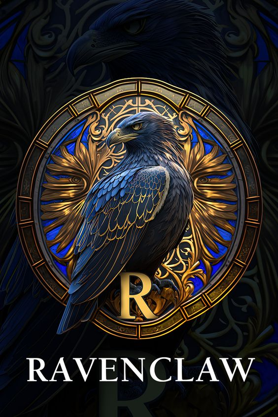
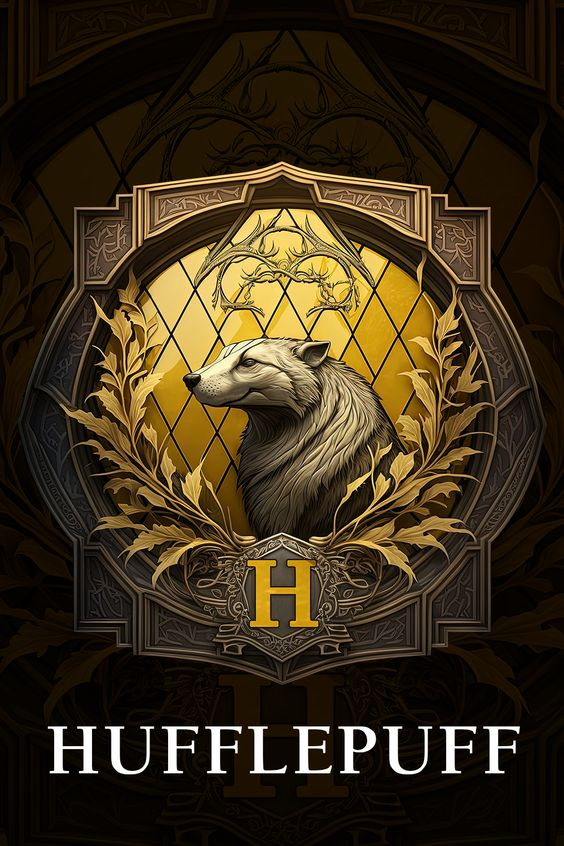

SELECIONE UMA CASA
-

-

- 
- 

SONSERINA
A Sonserina, fundada por Salazar Slytherin,
é uma das quatro casas da Escola de Magia e Bruxaria de Hogwarts.
Ao estabelecer a casa,
Salazar instruiu o Chapéu Seletor a escolher somente alunos
que obtivessem algumas de suas características particulares as quais
ele prezava. Entre elas incluem a astúcia, desenvoltura,
liderança e ambição.
Seu animal emblemático é uma serpente e
suas cores são verde e prata.